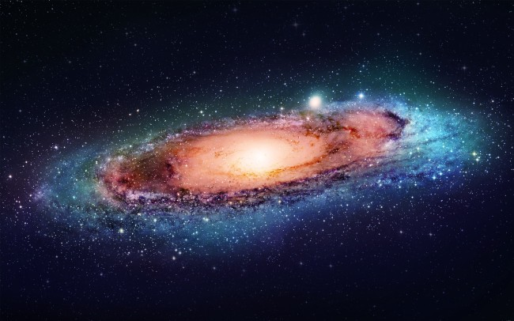

星火 |
天文网 |
web 天文博物馆 |
 |
创建于1996年 |

关于天文学
天文学(Astronomy)是研究宇宙空间天体、宇宙的结构和发展的学科。内容包括天体的构造、性质和运行规律等。主要通过观测天体发射到地球的辐射，发现并测量它们的位置、探索它们的运动规律、研究它们的物理性质、化学组成、内部结构、能量来源及其演化规律。天文学是一门古老的科学，自有人类文明史以来，天文学就有重要的地位。 |
发展趋势
天文学的研究对于我们的生活有很大的实际意义，对于人类的自然观有很大的影响。古代的天文学家通过观测太阳、月球和其他一些天体及天象，确定了时间、方向和历法。这也是天体测量学的开端。如果从人类观测天体，记录天象算起，天文学的历史至少已经有五六千年了。天文学在人类早期的文明史中，占有非常重要的地位。埃及的金字塔、欧洲的巨石阵都是很著名的史前天文遗址。哥白尼的日心说曾经使自然科学从神学中解放出来；康德和拉普拉斯关于太阳系起源的星云说，在十八世纪形而上学的自然观上打开了第一个缺口。
牛顿力学的出现，核能的发现等对人类文明起重要作用的事件都和天文研究有密切的联系。当前，对高能天体物理、致密星和宇宙演化的研究，能极大地推动现代科学的发展。对太阳和太阳系天体包括地球和人造卫星的研究在航天、测地、通讯导航等部门中都有许多应用。天文起源于古代人类时令的获得和占卜活动。
天文学循着观测-理论-观测的发展途径，不断把人的视野伸展到宇宙的新的深处。随着人类社会的发展，天文学的研究对象从太阳系发展到整个宇宙。现今，天文学按研究方法分类已形成天体测量学、天体力学和天体物理学三大分支学科。按观测手段分类已形成光学天文学、射电天文学和空间天文学几个分支学科。